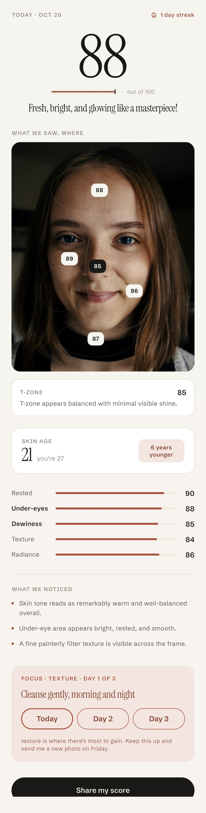
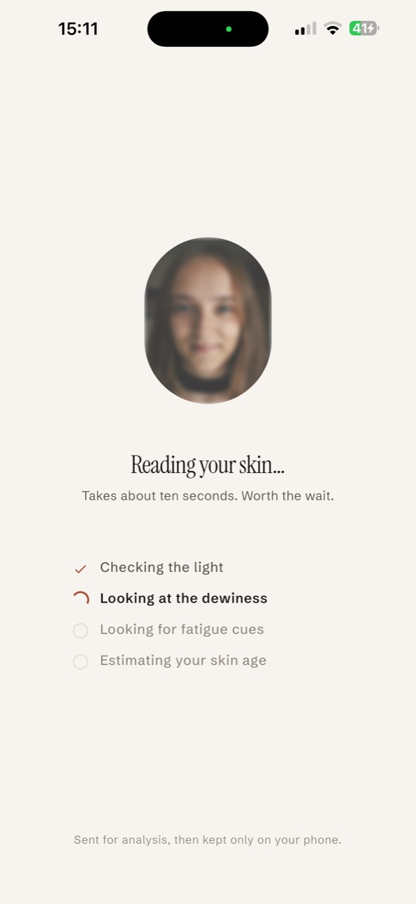
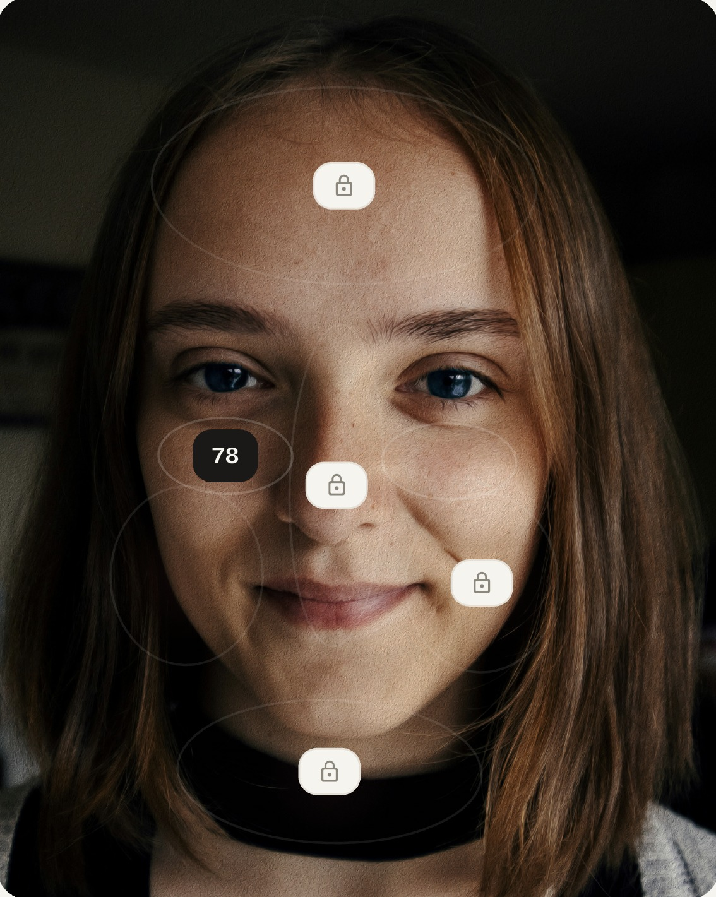
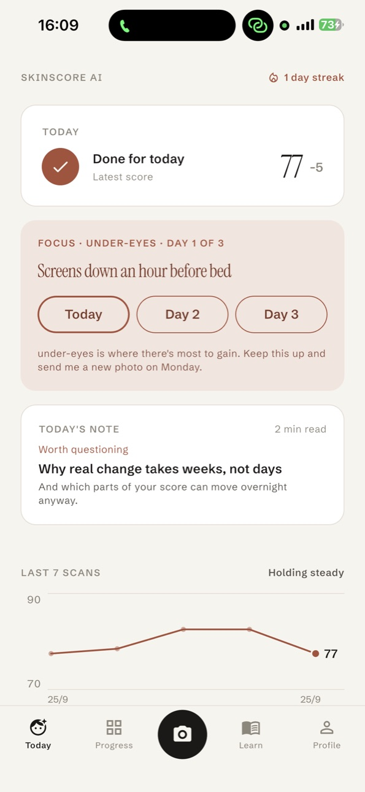

Bir selfie, bir cilt puanı, sürdürecek tek bir alışkanlık.
SkinScore AI cildinin bugün nasıl göründüğünü okur: 100 üzerinden bir puan, her bölgeye not düşülmüş bir yüz haritası, tahmini cilt yaşı, beş alt puan; sonra bir sonraki taramaya kadar üç gün deneyeceğin tek bir alışkanlık.
İlk tarama ücretsiz. Hesap yok, e-posta yok, reklam yok. Fotoğrafın telefonunda kalır.

Ayna değil. Dünü hatırlayan ikinci bir göz.
100 üzerinden puan
Cildin şu an ne kadar dinlenmiş ve sağlıklı görünüyor; hareketini izleyebileceğin tek bir sayı.
Beş alt puan
Dinlenmişlik, göz altı, nemli görünüm, doku, ışıltı. Her birine ayrı puan.
Yüz haritası
Alın, yanaklar, T bölgesi, göz altı, çene: her bölgeye iliştirilmiş kısa bir not.
Cilt yaşı
Cildin bugün kaç yaşında görünüyor, gerçek yaşının yanında. Görünüm, ölçüm değil.
Son taramandan bu yana
İkinci taramadan itibaren: ne değişti, ne yerinde kaldı ve muhtemelen neden.
Tek alışkanlık, üç gün
Uyku, su, ekranı kapatmak, nazik temizlik ya da güneş kremi: sürdürecek tek bir şey, sonra yeniden tara.
On saniye, günde bir kez.
Pencere ışığı, filtre yok, saçlar geride. Tüm hazırlık bu.

Tek bir selfie çek
Uygulama önce ışığı ve açıyı kontrol eder; okuma odaya değil cildine dair olsun diye.

Cildini oku
Puan, başlık, yüz haritası, alt puanlar, üç gözlem. Hepsi görünüm diliyle, klinik hiçbir şey yok.

Tek alışkanlığı sürdür
En çok kazanç olan bölgeye üç günlük odak, istersen günlük bir hatırlatma ve gelmeni ödüllendiren bir seri.
Yüzün senin. Öyle davranıyoruz.
- Herhangi bir fotoğraf yapay zekâ servisine gönderilmeden önce sana sorulur; hayır diyebilirsin.
- Selfie analiz için şifreli gönderilir ve sunucularımızda saklanmaz.
- Okumaların, fotoğrafların ve cevapların yalnızca telefonunda yaşar. Bir taramayı ya da uygulamayı sil, giderler.
- Hesap yok, e-posta yok, reklam kimliği yok. Yalnızca çökme raporları ve anonim kullanım sayıları.
İlk tarama ücretsiz. Pro, günlük alışkanlık.
SkinScore Pro her gün bir tarama (ışık kötüyse yeniden çekim hakkıyla), cilt yaşı, tam yüz haritası ve haftalık grafiği açar. 3 gün ücretsiz denemeli yıllık ya da aylık. Mağaza hesabından istediğin zaman iptal edebilirsin.
İlk sorulan sorular.
Bu tıbbi bir uygulama mı?
Hayır. SkinScore AI bir sağlıklı yaşam uygulamasıdır. Cildinin bugün nasıl göründüğünü görünüm diliyle anlatır; hiçbir şeyi ölçmez, tespit etmez, teşhis koymaz ve asla ürün ya da tedavi önermez. Seni endişelendiren bir şey varsa dermatologa görün.
Fotoğrafım nereye gidiyor?
Onay verdikten sonra sunucumuza şifreli gönderilir, okuma için yapay zekâ modeline iletilir ve silinir. Yalnızca telefonunda kalır. Hesap olmadığı için hiçbir şey adına bağlı değildir.
Puanım neden düştü?
Genellikle ışık. Loş bir oda, sarı bir lamba ya da bir filtre, cildin okunuşunu bir gecelik uykudan daha çok değiştirir. Uygulama ışık kötüyse söyler, Pro yeniden çekmene izin verir. Onun dışında puanı en çok oynatan üç şey uyku, su ve yatmadan önce ekran.
Hangi telefonlarda çalışıyor?
Android 7.0 ve üzeri, şu an Google Play'de. iPhone sürümü App Store incelemesinde.
Pro'yu nasıl iptal ederim?
Diğer abonelikler gibi Google Play ya da App Store abonelikler sayfasından. Dönem bitmeden en az 24 saat önce iptal edersen bir daha ücret alınmaz.